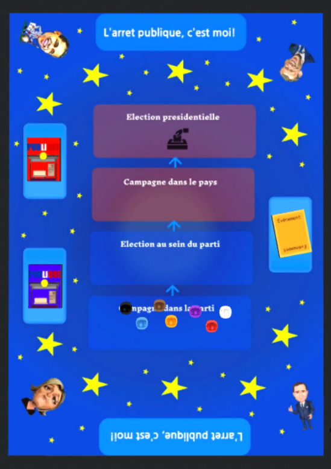

L'arrêt Publique, c'est moi !
L'arrêt Publique, c'est moi ! est un jeu de société ayant pour thème la politique.
Qui n’a jamais rêvé de devenir président ? Aujourd’hui sera peut-être votre jour de chance ! Vous aurez l’occasion de participer aux élections présidentielles. Pour remporter la partie, obtenez le plus de votes pour rester dans la course, et peut-être bien devenir président.

Plateau du jeu
Le plateau est divisé en 4 phases : Campagne dans le parti, Election dans le parti, Campagne dans la pas et Election Présidentielle
Pions et jetons du jeu
Les enveloppes se trouvant dans l'urne correspondent à des votes. Pour passer chaque phase et remporter la partie, il faut en avoir plus que ses adversaires
Règles du jeu
Déroulement de la partie :
Nombre de joueurs : 3-7
Le plateau principal est divisé en 4 phases, il permet de suivre l’avancée du jeu. Parmi ces phases, les phases : “Campagne dans le parti”, et “Election dans le parti”, sont associées aux cartes “parti” de couleur bleu ; les phases “Campagne dans le pays”, et “Election présidentielle”, correspondent aux cartes “présidentielle” de couleur rouge. Pour devenir président, il vous faudra franchir chaque phase en remportant un nombre plus important de vote que vos adversaires. Si vous faites partie des joueurs ayant obtenue le moins de vote, vous n’êtes plus candidat, et devenez électeur. Pour inverser les rôles, retournez votre carte “rôle” pour passer en mode électeur. (Voir la partie “fin du tour” pour plus d’informations)
Début du jeu
Pour commencer, chaque joueur doit se munir d'un certains nombres de votes. Honneur au plus jeune de la table. Au début de chaque phase, 5 cartes bleues ou rouges seront distribuées face cachée et de façon aléatoire aux joueurs. Les cartes bleues ou rouges sont divisées en 2 tas, correspondant chacun aux phases qui leur sont associés.
Durant une phase :
Le jeu suit le sens des aiguilles d’une montre, et chaque joueur aura droit à une action uniquement. En fonction de ses cartes, le joueur a soit la possibilité de jouer pour lui, soit pour autre candidat. Posez donc la carte en face du joueur qu’elle affecte. Au début d’une nouvelle phase, une carte “évènements” devra être retournée.
Fin d'une phase :
La fin d’une phase se fait lorsque qu’il n’y a plus de carte dans la main des joueurs. Le dernier joueur possédant encore des cartes n’a plus la possibilité de jouer, il doit alors poser ses cartes dans sa fosse et s’attribuer 1 vote par carte. A la fin d’une phase, les joueurs ayant obtenue le plus de vote reste candidat et passe au niveau supérieur, tandis que les joueurs se trouvant avec le moins de vote deviennent électeurs.
Pour une partie de 3 à 5 joueurs :
Il n’y a pas d’élimination lors des 3 premières phases. A la dernière phase, il ne doit rester que les 2 meilleurs candidats. Les autres deviennent électeurs.
Pour une partie de 6 à 7 joueurs :
Il ne doit rester que 5 joueurs à la seconde phase, 3 à la troisième phase et 2 à la dernière.
En cas d’égalité du nombre de votes final : Les joueurs doivent récupérer leur fausse située devant eux pour la mélanger face cachée, et piocher la première carte de la pile qui définira la somme totale des votes remportés durant la partie. Si le joueur tombe sur une carte qui lui ajoute ou enlève des votes, il gagne ou perd la valeur indiquée. Si le joueur tombe sur une autre carte la valeur reste nulle.